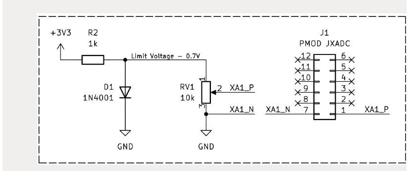

Input
vauxp6 / vauxn6로 0~1V 아날로그 입력을 받습니다.
RTL 주변기기 회로설계 · 15
Basys3 내부 XADC(엑스에이디씨, 아날로그-디지털 변환기)의 VAUX6 채널을 사용하여 0~1V 아날로그 입력을 12-bit Raw 값으로 읽고, 이를 0~9 구간으로 변환해 FND 최상위 자리에 표시합니다. CdS가 켜져 있으면 CdS 표시가 Volume보다 우선합니다.
vauxp6 / vauxn6로 0~1V 아날로그 입력을 받습니다.
do_out[15:4]를 12-bit xadc_raw로 저장합니다.
xadc_raw를 0~9로 변환하여 FND 최상위 자리에 표시합니다.
vauxp6 / vauxn6
→ xadc_wiz_0
→ do_out[15:0]
→ xadc_analog_reader
→ xadc_raw[11:0]
→ xadc_volume_level_controller
→ volume_digit[3:0]
→ FND 최상위 자리| 구분 | 파일 |
|---|---|
| 신규 | xadc_analog_reader.v |
| 신규 | xadc_volume_level_controller.v |
| 구조화 추가 | fnd_status_volume_selector.v |
| 수정 | basys3_uart_led_pwm_cds_ultra_fnd_top.v |
| XDC 추가 항목 | xadc_vaux6_constraints_snippet.xdc |
xadc_wiz_0 자체는 RTL 파일을 직접 작성하는 것이 아니라
Vivado XADC Wizard가 생성하는 IP(아이피, 재사용 회로 블록)입니다.
| CTRL Bit | 기능 |
|---|---|
CTRL[0] | LED PWM Enable |
CTRL[1] | CdS Enable |
CTRL[2] | 초음파 거리계 Enable |
CTRL[6] | XADC Volume 표시 Enable |
CTRL[7] | 누적 사이트에서는 Chapter 13의 거리 기반 LED Bar Mode 유지 |
CdS ON
→ 최상위 자리 = L 또는 d
CdS OFF + Volume ON
→ 최상위 자리 = 0~9
CdS OFF + Volume OFF
→ 기존 거리 상태 n / - / F 또는 -
| 기능 | Basys3 | FPGA Package Pin | Top 포트 |
|---|---|---|---|
| XADC + | XA1_P | J3 | vauxp6 |
| XADC - | XA1_N | K3 | vauxn6 |
| 항목 | 설정 |
|---|---|
| Component Name | xadc_wiz_0 |
| Interface | DRP |
| Channel Selection | Single Channel |
| Channel | VAUX6 |
| Mode | Continuous Mode |
| DCLK | 100 MHz |
| Alarm | 사용 안 함 |
| External MUX | 사용 안 함 |
Vivado
→ IP Catalog
→ XADC Wizard
→ xadc_wiz_0 생성
→ VAUX6
→ Continuous Mode
→ Generate Output Productsxadc_wiz_0.xci가 Design Sources에 포함되어야 하며,
자동 생성된 Instantiation Template의 포트명을 실제 Vivado 버전에서 확인합니다.
localparam [6:0] XADC_ADDR_VAUX6 = 7'h16;
assign daddr_in = XADC_ADDR_VAUX6;
xadc_wiz_0 u_xadc_wiz_0 (
.daddr_in (daddr_in),
.dclk_in (clk),
.den_in (eoc_out),
...
.do_out (do_out),
.drdy_out (drdy_out),
.eoc_out (eoc_out)
);if (drdy_out) begin
xadc_raw <= do_out[15:4];
xadc_valid <= 1'b1;
end12-bit XADC Raw 범위는 0~4095입니다. 곱셈 대신 비교 구간을 사용하여 10단계로 나눕니다.
| xadc_raw | volume_digit | 전압 기준 |
|---|---|---|
| 0~409 | 0 | 약 0~0.1V |
| 410~819 | 1 | 약 0.1~0.2V |
| 820~1228 | 2 | 약 0.2~0.3V |
| 1229~1638 | 3 | 약 0.3~0.4V |
| 1639~2047 | 4 | 약 0.4~0.5V |
| 2048~2457 | 5 | 약 0.5~0.6V |
| 2458~2866 | 6 | 약 0.6~0.7V |
| 2867~3276 | 7 | 약 0.7~0.8V |
| 3277~3685 | 8 | 약 0.8~0.9V |
| 3686~4095 | 9 | 약 0.9~1.0V |
CTRL[6]
→ volume_mode_en
xadc_analog_reader
→ xadc_raw
xadc_volume_level_controller
→ volume_digit
fnd_status_volume_selector
→ CdS > Volume > Distance Status
fnd_status_3digit_display
→ FND## XA1_P
set_property PACKAGE_PIN J3 [get_ports vauxp6]
set_property IOSTANDARD LVCMOS33 [get_ports vauxp6]
## XA1_N
set_property PACKAGE_PIN K3 [get_ports vauxn6]
set_property IOSTANDARD LVCMOS33 [get_ports vauxn6]| HEX 명령 | 의미 | 표시 |
|---|---|---|
010000 | 전체 OFF | ---- |
010002 | CdS | L--- / d--- |
010004 | 초음파 | 거리 표시 |
010040 | Volume | 0--- ~ 9--- |
010044 | Volume + 초음파 | 0xxx ~ 9xxx |
010046 | CdS + Volume + 초음파 | Lxxx / dxxx |
0.7V로 제한하고,
포텐셔미터 출력도 0~0.7V라고 설명합니다.
동시에 Volume 변환표는 0~1.0V → 0~9를 사용합니다.
12-bit Full Scale을 1V로 보면 0.7V는 약 2866.5이므로
제공된 비교식에서는 대략 volume_digit=6 부근까지가 됩니다.
따라서 해당 회로를 그대로 사용하면서 9까지 표시된다고 단정할 수 없습니다.
원본 코드와 회로는 임의 수정하지 않고 이 차이를 명시합니다.
CTRL[7]이 Reserved로 적혀 있지만,
누적 홈페이지의 Chapter 13에서는 이미 CTRL[7]을
거리 기반 LED Bar Mode로 사용했습니다.
기존 정상 기능을 제거하지 않고 CTRL[7] 용도를 유지했습니다.
XADC는 CTRL[6]만 사용하므로 두 기능은 직접 충돌하지 않습니다.
-023, -120으로 제시하지만,
Chapter 12에서 이미 거리 상태 문자 n / - / F를 추가했습니다.
따라서 누적 사이트는 Chapter 12 기능을 유지합니다.
CdS 또는 Volume이 활성화되면 그 값이 최상위 자리를 우선 사용합니다.
tb_xadc_volume_level_controller.v는 Raw 구간 경계값을 확인하기 위한 단위 Testbench입니다.
CTRL[6]으로 XADC Volume 표시를 켭니다.xadc_wiz_0, VAUX6, Continuous Mode를 생성합니다.do_out[15:4]를 12-bit xadc_raw로 사용합니다.xadc_raw를 비교 구간 방식으로 0~9 숫자로 변환합니다.